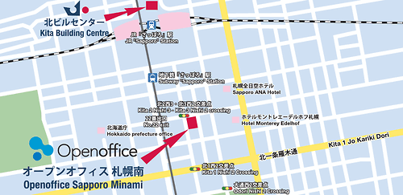

●JR札幌駅または地下鉄さっぽろ駅下車、22番出口から徒歩1分
- [お車でのアクセス]
- 『北2西3』『北3西2』交差点南側。
- [空港からのアクセス]
- 新千歳空港から、高速道路利用『札幌』インターチェンジから『北一条雁来通り』を札幌駅方面へ、『北1西2』交差点を左折、大通り経由で、『大通り西2』を右折、400m先右側。
- [電車でのアクセス]
- JR札幌駅または地下鉄さっぽろ駅下車、22番出口から徒歩1分。
〒060-0002 北海道札幌市中央区北2条西2-32 第37桂和ビル5F,6F
オープンオフィス総合受付： 0120-974-685